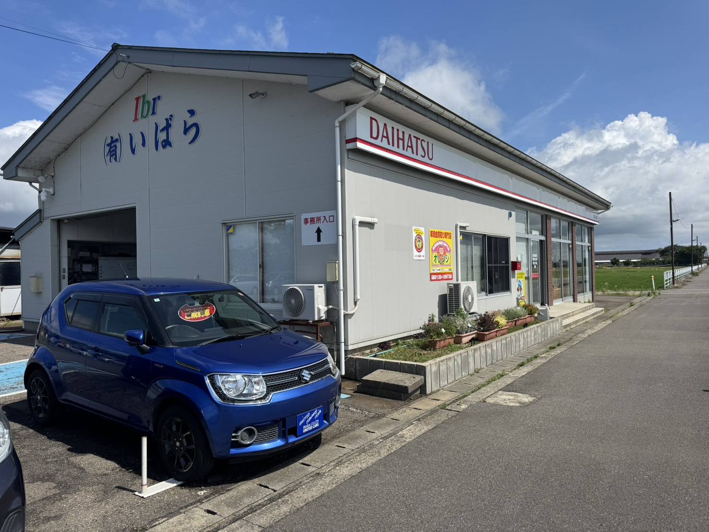

認証工場完備。日常の点検から車検、故障診断まで、確かな技術で愛車をベストコンディションに保ちます。新潟トヨタグループ協力店です。

お車は買って終わりではありません。安全に、長く乗り続けるためには、定期的な点検と整備が欠かせません。UNITED COMPANY GROUP は自社に認証工場を備え、国家資格を持つ整備士が愛車をしっかりメンテナンスします。
車検はもちろん、「なんだか異音がする」「警告灯がついた」といった不調のご相談も大歓迎。JAFを呼ぶより早く駆けつけられる、地域密着の小回り対応が私たちの強みです。まずはお気軽にお電話ください。
法定24ヶ月点検を含む車検整備。事前見積りで費用が明確。代車もご用意しています。
12ヶ月点検など、故障を未然に防ぐための定期チェック。安心のカーライフを支えます。
異音・警告灯・エアコン不調など、日々の「困った」に迅速対応。故障診断もお任せください。
エンジンオイル、バッテリー、タイヤ、ワイパーなど消耗品の交換もお気軽に。
冬用タイヤの交換・保管、バッテリー点検など、新潟の冬に備えた季節のメンテナンス。
名義変更、廃車手続きなど、お車にまつわる面倒な手続きも代行いたします。
下記は基本料金（点検・整備手数料）の目安です。別途、法定費用（自賠責・重量税・印紙代）がかかります。
| 車種区分 | 基本料金（税込・目安） | 備考 |
|---|---|---|
| 軽自動車 | ¥25,000 〜 | 点検・整備・検査代行を含む |
| 小型・普通車（〜1.5t） | ¥30,000 〜 | コンパクト・セダン等 |
| ミニバン・SUV（〜2.0t） | ¥35,000 〜 | 1BOX・大型SUV等 |
| 代車 | 無料 | 台数に限りあり／要予約 |
※ 上記は基本料金の目安で、別途 法定費用（自賠責保険料・自動車重量税・印紙代）および交換部品代が必要です。車両の状態により金額は変動します。正確なお見積りは無料でお出ししますので、お気軽にお問い合わせください。
お電話・LINEでご予約ください。車検満了日の1ヶ月前からがおすすめ。無料でお見積りをお出しします。
お車をお預かりし、整備士が細部まで点検。必要な整備内容をご説明し、ご了承いただいてから作業します。
点検結果に基づき整備・部品交換を実施。基準に適合しているか検査を行います。作業中は代車をご利用いただけます。
作業内容をご報告のうえご納車。次回のメンテナンス時期もあわせてご案内します。